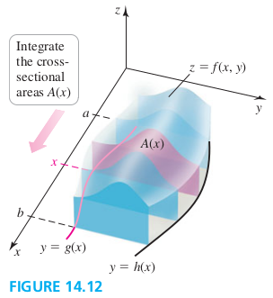

Section 14.2 Double Integrals Over General Regions
General Regions of Integration
Iterated Integrals
Assume for the moment that f is nonnegative on R and consider the solid bounded by the surface z=f(x,y), and R. Imagine taking vertical slices throught he solid parallel to the y-axis. The cross section througnthe solid at a fixed value of x extends from the lower curver y=g(x) to the upper curver y=h(x). The area of that cross section is
A(x)=∫g(x)h(x)f(x,y)dy(a⩽x⩽y)
The volume of the region is given by a double integral; it is evaluated by integrating the cross-sectional areas A(x) from x=a to x=b
R∬f(x,y)dA=∫abA(x)∫g(x)h(x)f(x,y)dydx

EXAMPLE 1 Evaluating a double integral
Express the integral R∬f(x,y)dA as an iterated integral, where R is the region bounded by the parabolas y=3x2 and y=16−x2. Then evaluated the integral.